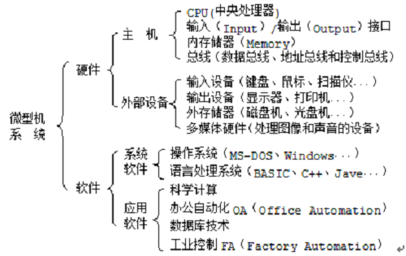
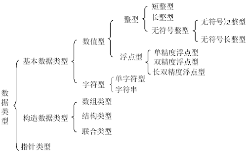

·····················································································································
一、C语言概论
1.1 C语言简介
C语言是一门通用计算机编程语言，应用广泛，它对编写需要进行硬件操作的场合，优于其他高级语言。C语言的设计目标是提供一种能以简易的方式编译、处理低级存储器、产生少量的机器码以及不需要任何运行环境支持便能运行的编程语言，它兼具汇编语言（执行速度快，能充分发挥硬件的潜力）和高级语言（编程/调试方便、可读性/可移植性好）的优点。尽管C语言体提供了许多低级处理的功能，但仍然保持着良好跨平台的特性，不仅可以在电脑平台编译，还可以在一些嵌入式处理器以及超级电脑等作业平台。目前，c语言仍然具有非常强的活力。
1.2 微型计算机系统
二进制编码系统
计算机只能识别和处理二进制码，现在，英文字母、运算符和标点符号等字符都采用ASCII码。对于多媒体计算机，把文本、图像、声音等信息按某种标准格式进行二进制编码，就可以解决文本、图像和声音等的控制管理、存储、变换和传送等。行使这些功能的系统都统称为二进制编码系统。
微型计算机硬件的基本组成
计算机发展至今，其结构依然为冯*诺依曼结构。即由运算器、控制器、存储器、输入设备和输出设备等5部分组成。

- 微型计算机将控制器和运算器集成为中央处理单元CPU，其输出有三种总线：地址总线（A0~A31）、数据总线（64位）和控制总线。
- 存储器分为外存储器和内存储器（RAM和ROM）。每个存储单元为一个字节byte/B（8bits）。
- 输入/输出接口和外部设备是人机交互的接口。
计算机的层次结构有：裸机/操作系统/语言处理系统（核心为程序设计语言的编译系统）/通用软件、应用软件、工具软件。

1.3 C语言语法简述
- 高级语言程序均由一个主程序和若干个子程序组成，C语言也不例外。函数是一个独立的程序块，相互不能嵌套函数定义。函数分为标准函数和用户自定义函数。
- C语言的基本语言单位称为单词，分为5大类：标识符、关键字、常量、运算符和分隔符。
- 运行一个C程序，指从建立源程序文件到执行该程序并输出正确结果的全过程。其包含编辑（建议源程序文件）、编译（翻译为二进制代码形式的目标程序）、连接（与C库函数装配成可执行的程序.exe）、运行（运行exe）。
·····················································································································
二、数据类型、运算符和表达式
数据类型
在C语言中，数据类型可分为基本数据类型、构造数据类型、指针数据类型等。基本数据类型的最主要特点为：其值不可再分解为其他类型，即基本数据类型是自我说明的。

常量
- 十进制：无前缀/后缀，且首字母不为0
- 八进制：以0为前缀，如017表示15
- 十六进制：以0x/0X为前缀，如0xA0表示十进制160
- 整型常量的后缀（后缀加l/L表示长整型，加u/U表示无符号整型常量，同时加必须保证大小写相等）。
- 十进制小数形式：由数字和小数点组成，必须有小数点。例：0.0、100. 、-3.14
2.指数形式（一个浮点数可以无整数部分或小数部分，但是不能二者全无。一个浮点数可以无指数或小数，但是不能二者全无 [±][整数部分][.][小数部分][(e,E)±n][后缀]
如：.23e+12 、1. 、25E5 、+1.23e-4f
- 字符型常量：字符型常量是用单引号括起来的一个字符。占一个字节，其值就是该字符的ASCII码值。\表示转移
- 字符串常量：字符串常量是用双引号括起来的。字符串的最后自动加字符’\0’，表示字符串结束。
- 符号常量：如# define 标识符 常量 例：# define PI 3.1415926
变量
在程序执行过程中，值可以改变的量称为变量。一个变量应该有一个名字，同时在内存中占据着一定的存储单元。命名规则为：
- 必须以英文字母或者下划线开头，由字母、数字和下划线组成。
- 不能与关键字重名，长度受限制，对大小写敏感。
运算符
- short,char -> int
- int -> unsigned -> long -> unsigned long -> double
- folat -> double -> long double
- 强制类型转换：（类型名）表达式，例如（int）m
- 常见问题：数据溢出，浮点变量的舍入误差，忽略变量类型进行不合法的运行等。
表达式
- 基本赋值表达式：左值表达式=右值表达式
- 复合赋值表达式： += -= *= /= %= &= |= ^= <<= >>= 左op=右 等价于 左=左op右
- 条件运算表达式：表达式1？ 表达式2：表达式3 表达式1成立则运行表达式2，否则执行表达式3。
- 逗号表达式：表达式1，表达式2，……表达式n。先求表达式1的值，再求2，依次计算到n，则表达式n的值就是逗号表达式的值。